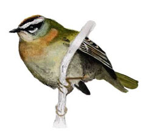

Firecrest

31/08/67 - Single bird singing. (DEP)
21/03/68 - Single bird
23/10/78 - Single bird. (RGH)
27/02/84 - Single bird. (BS)
11/11/84 - single bird. (BS)
10/11/96 - Single bird. (DH)
07/12/96 - 3 birds. All 3 seen again on 08/12. (DWH), (DH) & (BS). 2 birds were seen on 15/12
02/03/97 - Single bird
??/11/98 - 2 birds. (AJB)
??/12/98 - Single bird at nearby sewage works. (HCS)
11/01/99 - 2 birds, male & female; at nearby sewage works. (DWH)
14/11/99 - Single bird at nearby Paintmoor House. (LM)
30/11/09 - 2 birds (DWH)
08/01/10 - 1 bird stayed until 24/01 and seen by many (DWH)
2013 - One reported in first week of February by Brian Stagg
06/03/17 - 1 found near the hide and stayed for 3 days (KGH)
26/09/17 - 2 at the duck feeding area not far from the hide (SH)
08/02/18 - 1, also seen next day (SH)
19/02/18 - One bird
01/04/18 - One bird (SH)
26/10/22 - One bird in Laurel in NW corner (DWH)